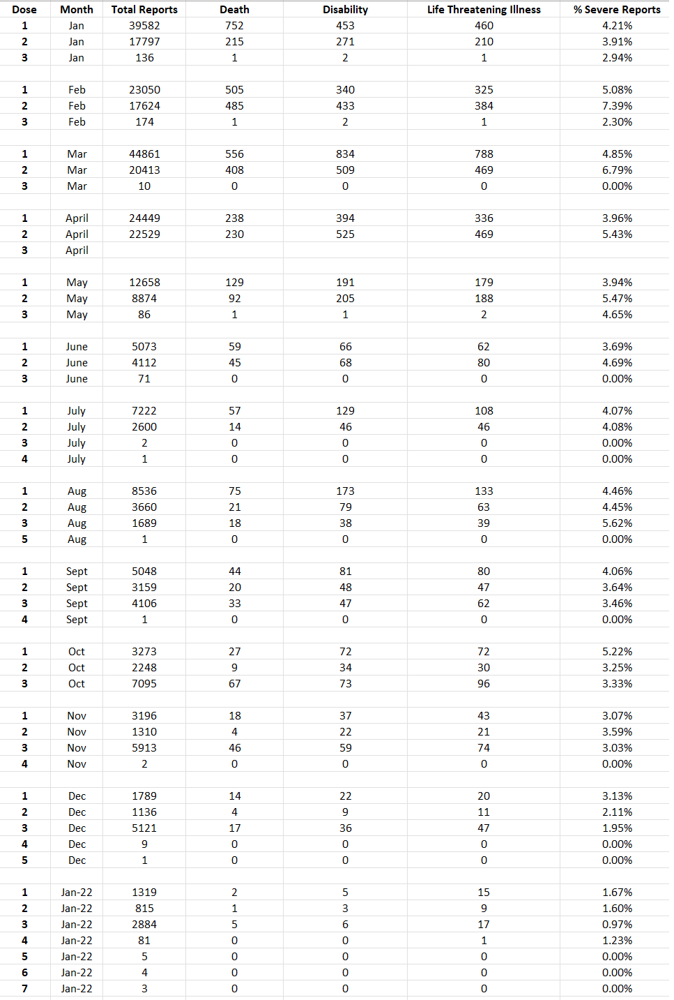

Variation in Effect of First and Second Doses
home | Booster Warnings by Month | Moderna | Pfizer | Janssen | Moderna (outside USA) | Pfizer (outside USA) | Janssen (outside USA) | International Deadly Lots | 1st & 2nd Doses | Severe | Lethal | Size Matters | Lot Sizes | Time till onset | Second Peak | Lot Expiry Dates | RNA Degradation | Causality | All or Nothing | Clusters | Symptom | Paralysis | Children | Gender | States | Geography | Japan | Case Reports | Whistle Blowers | EMA Leaks | Video Library | Treatment | Background | Download Source Code | Data Cleaning | Donate
This site may slow down due to high traffic. A backup site has been created - HowBadisMyBatch.com to reduce overload Thankyou.
Pfizer Study
Pfizer's study showed that the second dose had worse effects than the first. See - Pfizer Study
First and Second Doses in VAERS USA 2021
I wanted to investigate this using VAERS - to see if the second dose produced a higher % of severe adverse reactions than the first dose
So I filtered VAERS 2021 USA for 1st dose, then for 2nd dose, and each time I counted the number of deaths, disabilities and life threatening illnesses produced.
So 1 in 25 of the reports for the first dose record death or serious injury, compared to 1 in 20 of the reports for the second dose.
The main reason for the increase in severity for the second dose is the big increase in disabilities per 100,000 -
I decided to repeat the exercise, but this time for each month of 2021 to see how the percentages varied

There is no evidence that the second dose is consistently worse than the first, or that the third is consistentlty worse than the second.
There is variability in the % of severe reactions associated with each dose
Decreasing Severity over Time
First dose remained in the 4-5% range from January until october, then decreased in severity since then.
Second dose decreased in severity progressively since February.
Third dose started properly in August, and decreased in severity progressively since then.
This analysis does not take into account the vast number of cases of injury that are not classified as disability, e.g. paralysis, haemorrhage, heart attacks, arthritis, herpes, auto-immune illness, tremors, etc It merely suggests that the doses do not have a cumulative or summative effect in producing death or disability.
It looks as if initially pharma had issues with introducing the second dose - the second dose looks as if it was producing a compounding or cumulative effect with the first dose. However by July this was nolonger the case, and since August the second dose has produced fewer deaths and disabilities than the first.
There is a decrease in severity of the doses as time passes. This confirms other studies that have indicated a decrease in toxicity as alphabetic batch codes ascend. See - Clusters
Are more Recent Batches Safer?
This does not mean that more recent vaccine batches are safer, because I am only looking at death and disability. These are just tips of an iceberg. What does not kill you or disable you, can still cause extensive internal damage - and this has to be investigated before deciding on safety. For example - these vaccines have been shown to cause nerve damage and clotting, neither of which are classified as death or disability.
How Confident Am I in These Results
Given the large number of records for each dose, I would say that this impression of a decreasing severity is unlikely to change as more records are added.
Decreasing Interest In Vaccines
If the number of adverse reactions is directly proportional to the number of people being vaccinated, then the total number being vaccinated has decreased since March - this January it looks as if the numbers being vaccinated are only one tenth of those vaccinated last January. This may reflect a growing resistance to future doses.
More Doses Every Year?
VAERS contains records of people receiving 4th, 5th, 6th and 7th doses - indicating that the governments intend a regular dosing regime if people are to be allowed their freedoms. The pattern over 2021 appears to be testing of future doses with low numbers followed later by their full scale introduction. We see how in January they were already testing their third dose, in July they were testing their 4th, and in August their 5th. This January they are already testing their 6th and 7th.
Contact
covidscienceteam@protonmail.com
Created by Craig Paardekooper ©2021